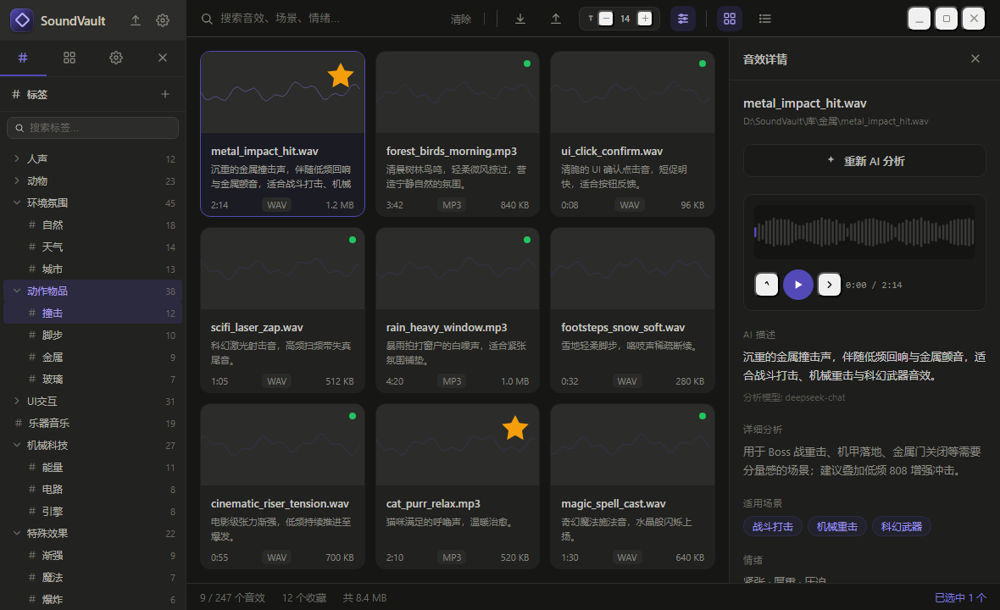

SoundVault 是一款本地运行的音效素材管理软件——AI 自动理解每段音频的使用场景、情绪与拟声词，并按八大分类体系自动打标签，让「找一段合适的音」从翻文件夹变成秒级检索。
它是为音效设计师、游戏/影视开发者、播客与视频创作者打造的「本地音效素材库」。你导入成千上万的音频片段，它帮你做三件事：听懂（AI 语义分析）、归类（标签与智能文件夹）、复用（搜索、收藏、跨设备迁移）。所有数据都在你自己的电脑上，API Key 只存在本地。
打开软件后，窗口分为三块：左侧栏（导航与筛选）、中间主区（工具栏 + 音效网格/列表）、右侧详情面板（选中音效的播放与分析）。先认识一下，后面每一步都对得上。

从导入到复用，覆盖音效管理的完整链路。下面的「八步手册」会逐条教你怎么操作。
一键让 AI 化身「音效库标注员」，为每段音频生成形象描述、使用场景、关联关键词、拟声词以及语义标签——全程不用任何音频工程术语，人人能懂。
人声 / 动物 / 环境氛围 / 动作物品 / UI交互 / 乐器音乐 / 机械科技 / 特殊效果。AI 分析结果自动归入对应父分类，左侧标签树点击即筛选。
右侧详情面板内置音频波形与进度条，支持播放/暂停、±5 秒快退快进、点击波形任意位置定位。私有 sv:// 协议流式加载，大文件也能秒开、可精准 seek。
单条音效一键「收藏」（星标）；也可建命名收藏夹做手动分组，右键任意音效即可加入，或当场新建文件夹。
不是文件夹，是自动归类规则。按质量评分、标签、是否收藏、导入时间等 11 个字段设条件，实时预览匹配数量，新增音效自动归位。
像 Eagle 一样生成便携式资源包：真实音频 + AI 分析 + 标签 + 收藏夹全部带走，可在另一台电脑一键合并迁入。
按文件名、场景、情绪关键词搜索；支持按导入时间 / 文件名 / 时长 / 大小排序，按格式过滤，网格与列表双视图切换。
删除的音效先进回收站，可恢复。整个软件离线运行，AI 服务商可自定义（DeepSeek / OpenAI / 通义千问 / Kimi / 豆包 / 硅基流动 / Claude / Gemini / Azure / Ollama / TokenDance / 自定义网关），Key 仅存本地。
从空白到井井有条，跟着走一遍即可。每一步都标注了操作路径（在哪点）和界面细节（会看到什么、字段叫什么）。
点击后弹出「扫描音效文件夹」对话框，分五步走完导入。
sword,impact）、文件名排除（如 temp,draft）、最小/最大大小(KB)file_path 指向本机位置——这也是它能离线工作的原因。单击任意音效卡片，右侧详情面板展开，含播放器与全部元信息。
0:03 / 1:24；点击波形任意位置可拖动定位网格视图 与 列表视图。文件名 / 时长 / 大小 / 导入时间 排序，支持升 / 降序与格式过滤（见 Step 8）。点「AI 分析」按钮，AI 会输出：形象描述、使用场景、关联关键词、拟声词，以及一组语义标签。
左侧「标签」栏呈现八大分类树。点击任意标签，中间主区立即过滤出带该标签的音效。
两种「收藏」方式并存，各司其职：
智能文件夹不是物理文件夹，而是一组自动归类条件。建好后符合条件的音效自动出现其中。
工具栏的「导出 / 导入」按钮，生成类似 Eagle 的便携式资源包。
_2 _3 序号工具栏右侧集中了所有浏览与窗口控制。
这个 580px 的弹窗决定 AI 用哪家、怎么连。所有 Key 只存在你本机。
deepseek-chat / gpt-4o），可改_2 _3 序号。以下方向已在规划中，按优先级推进：